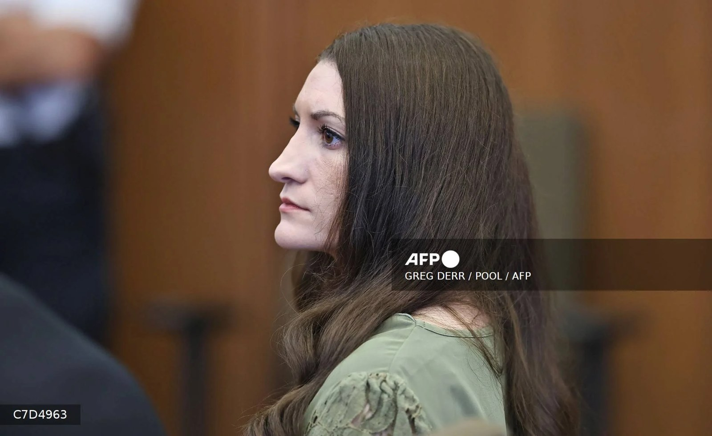

Prosecutors seek retrial of mother accused of killing her three children

Prosecutors in Massachusetts say they intend to retry Lindsay Clancy, 36, after jurors failed to reach a unanimous verdict in her trial over the deaths of her three children. The deadlock resulted in a mistrial. Prosecutor Jennifer Sprague told the court that a retrial was planned but did not specify what charges Clancy would face.
The next step depends on a separate defense motion seeking dismissal of the charges. Judge William Sullivan is expected to rule at the next hearing, scheduled for November 16. He has set aside March 2027 as a possible retrial date if the case proceeds. Clancy’s lawyer, Kevin Reddington, indicated he would not oppose a retrial if the judge rejects the dismissal motion.
At trial, Clancy did not deny strangling Cora, five, Dawson, three, and Callan, eight months old, at the family home in Duxbury in January 2023. She pleaded not guilty by reason of insanity, saying she heard a voice telling her to kill the children. Her lawyers argued that she was experiencing postpartum psychosis and therefore should not be held criminally responsible. Prosecutors disputed that account, arguing that the killings were planned and that Clancy understood the consequences of her actions.
The trial included more than 80 witnesses and drew attention to maternal mental health. The source material says medical experts estimate postpartum psychosis affects about one to two women in every 1,000 births. After the killings, Clancy cut her neck and wrists and jumped from a second-story window in what was described as an apparent suicide attempt. She was left paralyzed from the waist down and uses a wheelchair.
Source: Punch